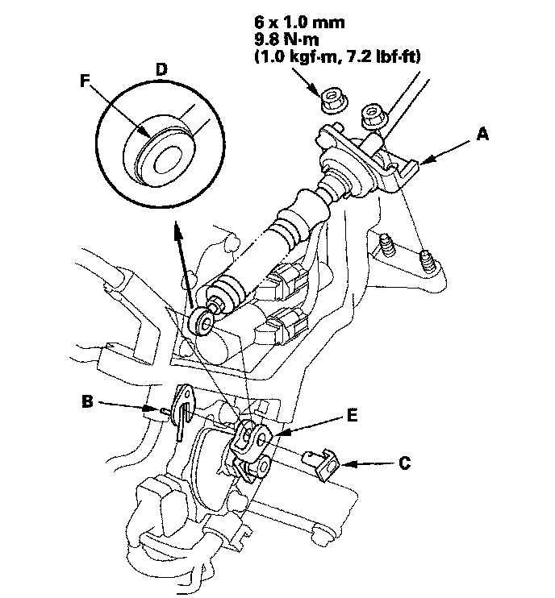
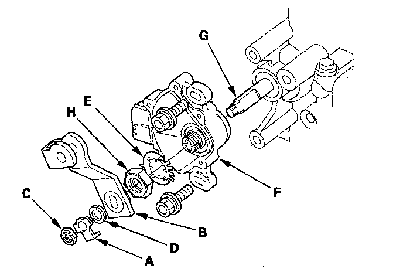
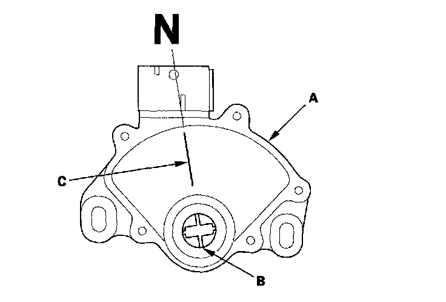
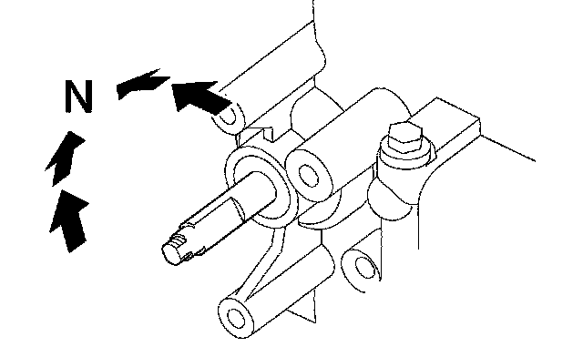
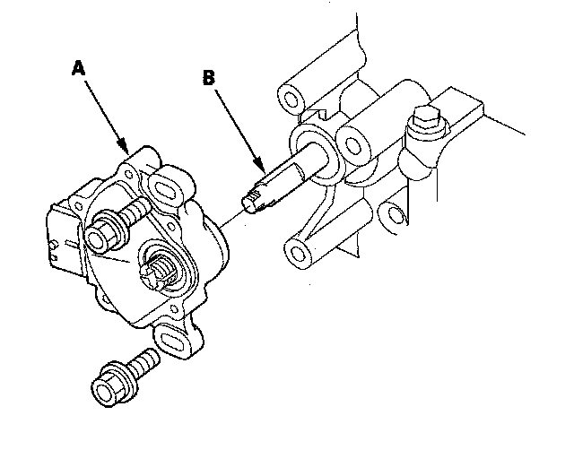
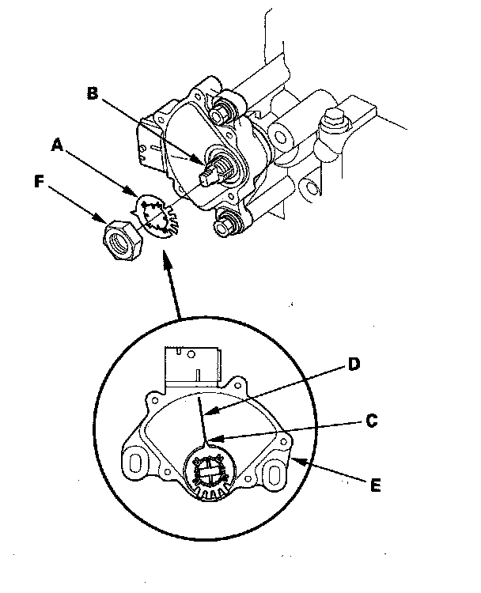
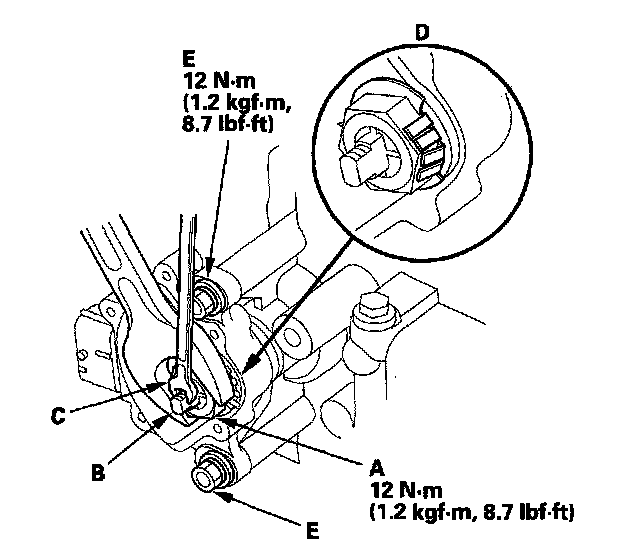
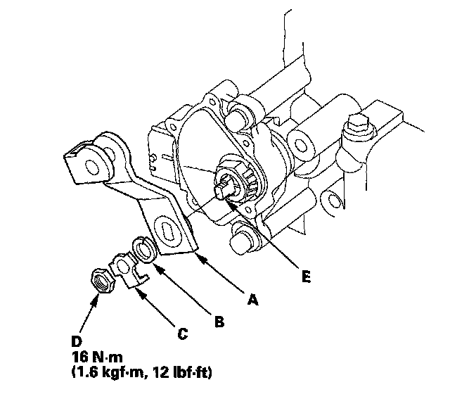

Transmission Range Switch Replacement
Transmission Range Switch Replacement1. Make sure you have the anti-theft codes for the audio system and the navigation system (if equipped).
2. Disconnect the negative terminal from the battery, then disconnect the positive terminal.
3. Remove the battery hold-down bracket, and remove the battery cover, battery, and battery tray.
4. Remove the under-hood subfuse box from its bracket, and remove the bracket from the battery base.
5. Remove the intake air duct and air cleaner housing.
6. Remove the battery base and battery base bracket.
7. Remove the nuts securing the shift cable bracket (A).

8. Remove the spring clip/washer (B) and control pin (C) then separate the shift cable end (D) from the control lever (E).
9. Check the synthetic resin bushing (F) in the shift cable end for a proper fit and wear. If the bushing is loose or worn, replace the shift cable.
10. Disconnect the transmission range switch connector.
11. Pry the lock tab of the lock washer (A) on the control lever (B) and remove the nut (C) lock washer, spring washer (D) and control lever.

12. Pry the lock tabs of the lock washer (E) on the transmission range switch (F) hold the control shaft (G) with a 6.0 mm wrench, and loosen the locknut (H).
13. Remove the locknut and lock washer, then remove the transmission range switch (two bolts).
14. Set the new transmission range switch (A) to the N position. The transmission range switch clicks in the N position, and the control shaft hole (B) aligns with the N position line (C).

15. Set the control shaft to the N position by turning the control shaft with a 6.0 mm wrench.

16. Install the transmission range switch (A) gently over the control shaft (B) and install the bolts loosely.

17. Install the new lock washer (A) over the control shaft (B) with aligning the projection (C) of the lock washer with the N positioning line (D) on the transmission range switch (E) and install the locknut (F).

18. Push the locknut against the transmission housing to seat the transmission range switch into the Control shaft, and tighten the locknut (A) to 12 N-m (1.2 kgf-m, 8.7 lbf-ft) while holding the control shaft (B) with a 6.0 mm wrench (C) then bend the lock tabs (D) of the lock washer against the locknut.

19. Tighten the bolts (E) to 12 N-m (1.2 kgf-m, 8.7 lbf-ft) securing the transmission range switch.
20. Install the control lever (A) spring washer (B) lock washer (C) and locknut (D) on the control shaft (E).

21. Check the connectors for rust, dirt, or oil, clean, then connect the connector securely.
22. Apply molybdenum grease to the bore hole of the synthetic resin bushing in the shift cable end, and attach the shift cable end to the control lever, then insert the control pin into the control lever hole through the shift cable end, and secure the control pin with the spring clip/washer.
23. Secure the shift cable bracket with the nuts.
24. Install the battery base bracket and battery base.
25. Install the air cleaner housing and intake air duct.
26. Install the under-hood subfuse box on the battery base, and install the subfuse box on its bracket.
27. Install the battery tray, battery, battery cover, and battery hold-down bracket, then connect battery terminals.
28. Turn the ignition switch ON (II). Move the shift lever through all positions, and check the transmission range switch synchronization with the A/T gear position indicator.
29. Check that the engine will start in the P and N positions, and will not start in any other shift lever position.
30. Check that the back-up lights come on when the shift lever is in the R position.
31. Allow the all four wheels to rotate freely, then start the engine, and check the shift lever operation.
32. Enter the anti-theft codes for the audio system and the navigation system (if equipped). Set the clock.
33. Do the steering column position memorization.
34. Do the power window control unit reset procedure.